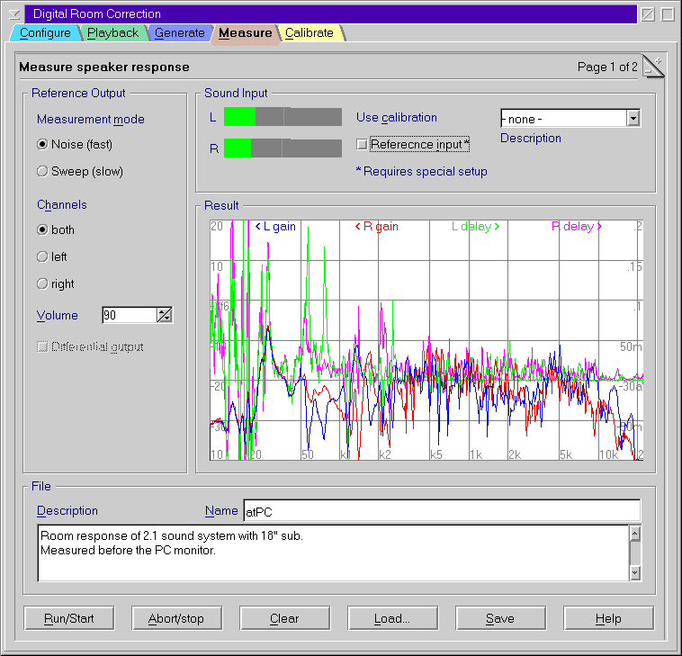
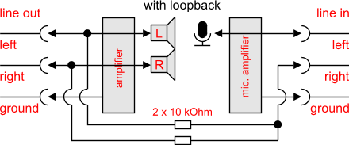
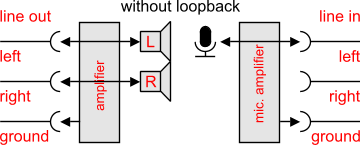

Measure room response

Prerequisites
- First of all you need a measurement
microphone.
- Secondly you microphone needs a microphone amplifier. While most PC
sound devices have such an amplifier most of them are often of rather
poor quality and not suitable for measurement purposes. So I recommend
to use an external one.
Setup
- Be sure to have configured DRC123
properly.
- Optionally select a a sound card
calibration file made before.
- Select a calibration file for your microphone
if possible.
- Set all sound controls of your amplifier (like bass, treble, balance)
to zero or push direct sound button.
- Disable any effect processors, equalizers (like RealEQ) and so on.
- It might be required to do some adjustments in the extended
measurement options page.
Measure with external loopback
reference and external microphone amplifier
Check the option reference input and use the setup shown in the
image.
If you have the option, use a special cable that returns a mix of line
out left and right line input. This will compensate for almost any
properties of your sound device. The mix can be done with two 10 kΩ metal
film resistors as shown at the right. This will only work if you use an
external microphone amplifier, because the microphone input has a too high
sensitivity and is often only mono.
Measure without loopback reference and
external microphone amplifier
Uncheck the option reference input and use the setup shown in the
image.
If you do not have the option for the loopback above DRC123 can also use
an internal loopback. In this case it is recommended to measure only in
stereo mode because otherwise the delay between the left and the right
channel is unknown and will cannot be compensated. Furthermore you should
work with a calibration in this case.
Do the measurements
- Place the microphone at a location where you intend to
listen music. Remember to use approximately the same altitude than your
ears.
- Select mode Noise (default).
- Select the channels to measure.
- Press Run button.
- Adjust the volume to get a reasonable recording level.
- Avoid any noise in the room during the measurement.
Neither move items nor your body.
- Wait until the results are reasonable smooth and stable. The
indeterminate phase rate below the graph is a good indicator for the
quality of the measurement. Good values are at 40 and less.
- Press Abort/Stop button.
- Enter a description to identify your measurement (optional).
- Enter a file name - without extension.
- Press Save button to save the result.
- Repeat the procedure for different microphone locations.
It is not required that the response is approximately at 0 dB.
Repeat the procedure for different locations of the microphone and save
the result to different file names.
It is not required that all measurements are done with exactly the same
parameters. But if you measure the left and right channel separately you
must not change anything between this measurements.
Verification
If you want to verify the results from DRC123 you may check the Verification
mode box. This will apply the currently selected deconvolution
filter to the reference signal before output. This is how your music
is played with DRC123. Ideally the response should be flat in this mode,
but usually there are some residuals because the correction is not exact
and the response depends highly on the microphone position.
Troubleshooting